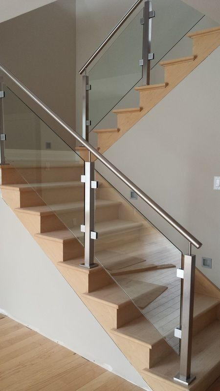

About Our Glass Balustrade Installation
At Tensorgrid Ltd, we design and install modern glass staircase balustrade systems that combine safety, durability, and contemporary aesthetics. Glass balustrades enhance openness and natural light while providing secure protection for residential, commercial, and public spaces.
We offer multiple installation options to suit different architectural designs, structural requirements, and visual preferences.
Installation Systems
🔹 U-Channel Mounted Balustrade
This system secures the glass panels within a base U-channel fixed along the staircase edge. The channel provides strong structural support while maintaining a clean and minimalist appearance.
Best For:- Modern residential staircases
- Commercial interiors
- Frameless architectural designs
- Sleek and seamless finish
- Concealed fixing system
- Strong and stable support
🔹 Spigot-Mounted Balustrade
Glass panels are supported using stainless steel spigots fixed directly onto the stair surface. This option creates a floating glass effect with minimal hardware visibility.
Best For:- Luxury interiors
- Contemporary architectural spaces
- Open staircase designs
- Elegant frameless look
- Easy maintenance and cleaning
- Maximum visibility and light flow
🔹 Side-Mounted (Face-Fixed) Balustrade
Glass panels are mounted on the side of the staircase structure using brackets or side channels, leaving the stair width fully usable.
Best For:- Narrow staircases
- Commercial buildings
- Space-optimised designs
- Maximizes walking space
- Strong structural anchoring
- Modern architectural appearance
🔹 Handrail-Supported Glass Balustrade
This system combines glass panels with a top handrail for additional safety and reinforcement while maintaining a contemporary design.
Best For:- High-traffic areas
- Family homes
- Commercial and public buildings
- Enhanced safety and stability
- Comfortable grip support
- Durable long-term performance
🔹 Top Groove Glass Balustrade
Glass panels are installed into a precision top groove within the staircase structure, creating a fully integrated and minimalist finish.
Best For:- Premium architectural projects
- Custom staircase designs
- Fully concealed fixing
- Clean architectural lines
- High-end aesthetic appeal
Why Choose Our Glass Balustrade Installation?
- Professional design and engineering
- High-quality materials and hardware
- Multiple installation options available
- Enhanced safety and durability
- Modern aesthetic appeal
- Custom solutions for unique requirements
Our Installation Process
Initial Consultation
Site Assessment
Design & Planning
Installation
Quality Check